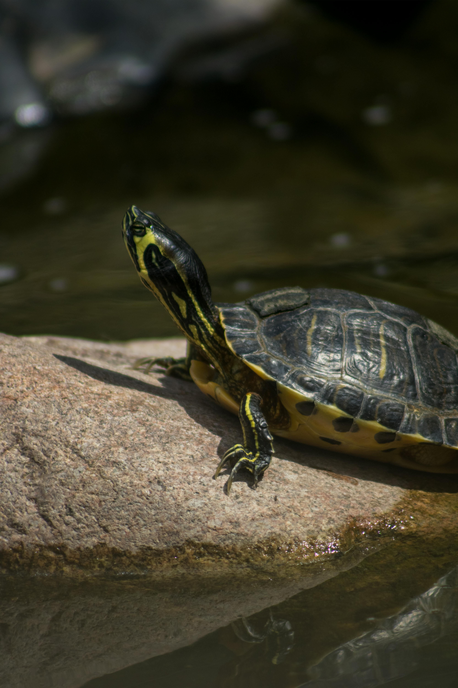
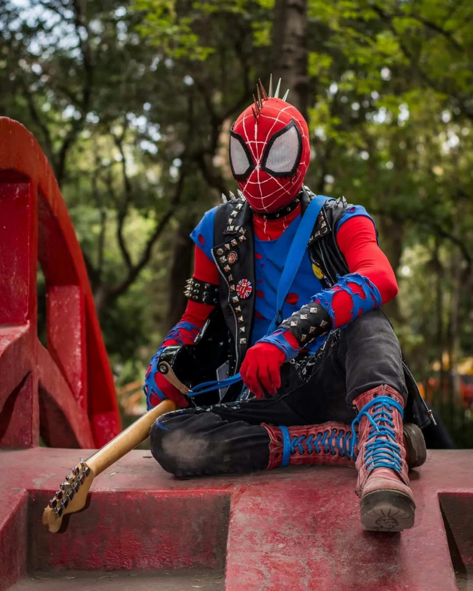
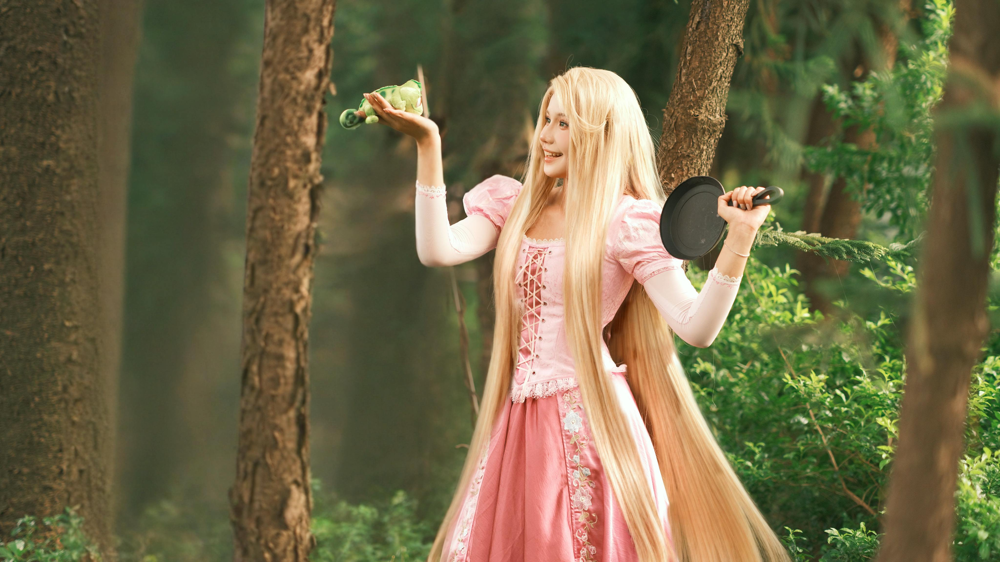
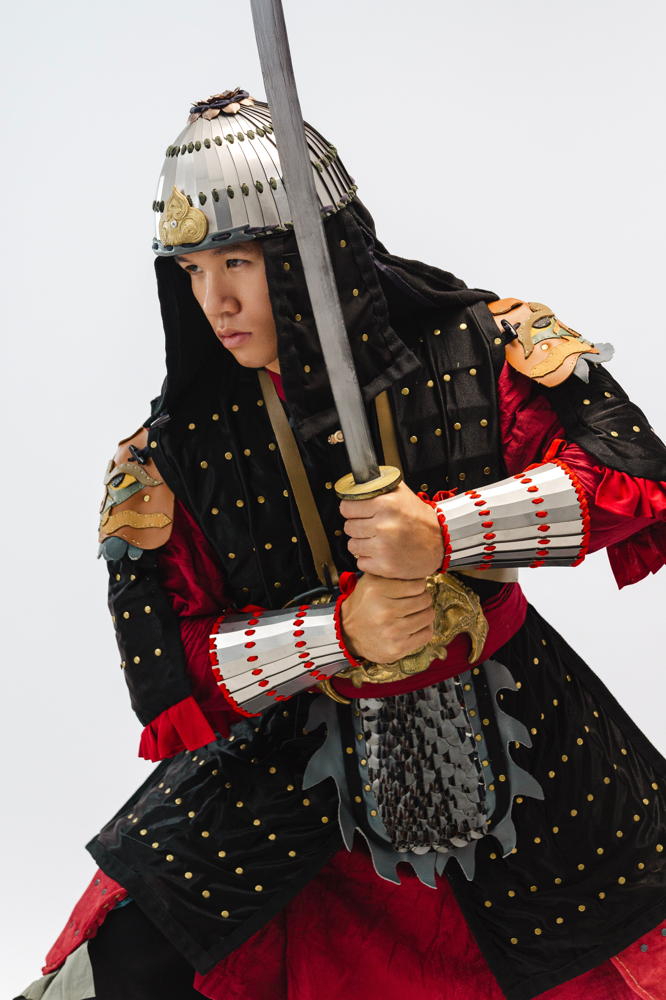
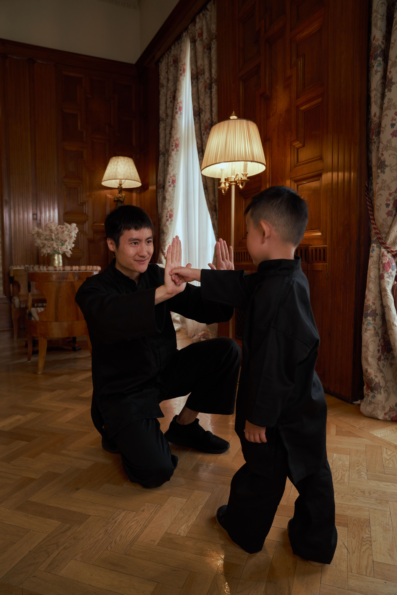

3 imagens que representam nossas animações favoritas:
Alexandra e Mel se conheceram esse ano tem 15 anos, sempre moraram e Juiz de Fora e gostam muito dessas animações:
Mel:
Tartarugas ninja:
Tartarugas ninja:
Tartarugas ninja é o favorito da Mel por que marcou a infancia dela.

Spiderman
Spiderman:

A Mel gosta do Spiderman por conta da envolvente história.
Enrolados:

Para Mel a Rapunzel é a favorita dela por que ela se indentifica com a personagem.
Alexandra:
Mulan:

A Mulan é a princesa favorita da Alexandra por que é muito corajosa.
As Aventuras de Jackie Chan:

Para a Alexandra trás nostalgia por que ela assistia quando criança com o irmão.
A Viagem de Chihiro:
 Para a Alexandra trás nostalgia por que ela assistia quando criança com a mãe.
Para a Alexandra trás nostalgia por que ela assistia quando criança com a mãe.